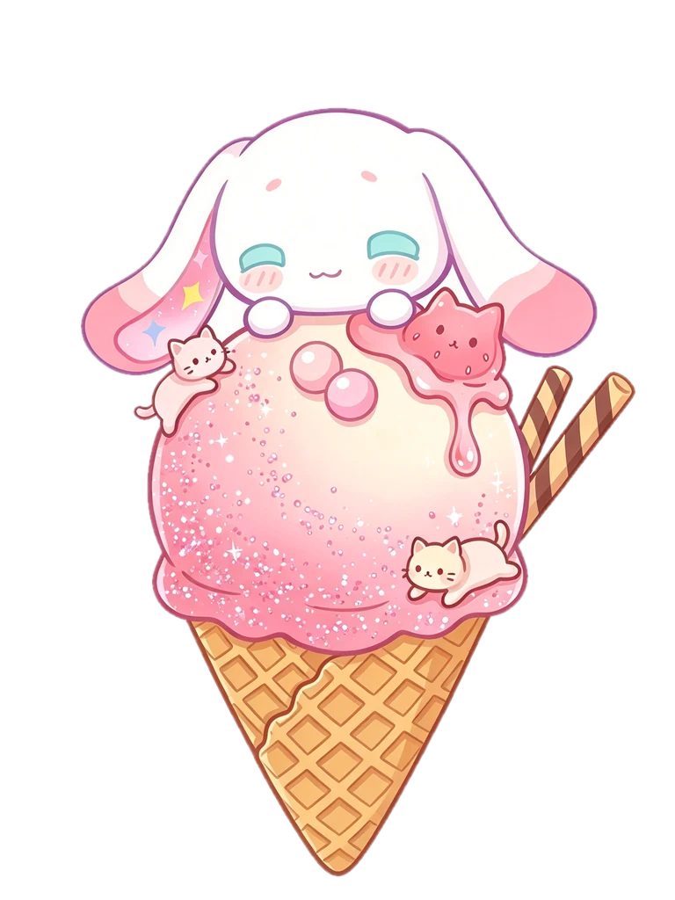

DESIGN NOTE · 参考图 1
大耳帽兜冰淇淋 · 设计说明

1大耳帽兜 2垂耳 3珍珠×2 4猫猫果冻酱 5饼干脆×2 6雪糕球 7奶猫×2 8华夫甜筒- 1大耳帽兜趴在球顶 · 最后登场薄荷闭眼 · 腮红 · :3 嘴 · 小爪搭边
- 2垂耳两侧长长下垂内侧粉渐变 · 左耳小星星
- 3粉色珍珠 ×2一大一小 · 球顶正前高光糖衣 · 紧挨着放
- 4猫猫果冻酱右上 · 糖浆往下滴草莓红猫头 · 透亮果冻
- 5饼干脆 ×2斜插右后方巧克力螺纹 · 一高一低
- 6雪糕球第一步放上粉→奶白渐变 · 闪粉 · 褶边
- 7奶猫 ×2随果冻酱一起左上趴一只 · 右下趴一只
- 8华夫甜筒底座 · 一直都在菱格纹 · 卷边 · 斜折缝
搭建顺序
雪糕
→
任意顺序
→
大耳帽兜
配色
- 草莓粉
- 奶白
- 薄荷眼
- 果冻红
- 巧克力
- 华夫